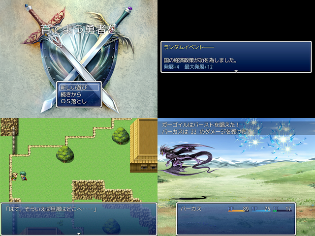

| No.31 | 使い捨て勇者ｖｓ意味プー魔王 ～一口ゲーセンから～ | 容量：95.2MB | |
|
 | ||||
| 作者：エル | ジャンル：育成系ｒｐｇ風味 使用ツール：VX lite（ＲＴＰ不要。そういう仕様だから） | 配信：眠たいから 動画：好きにして | 感想掲示板 | |
| コメント： ４月くらいに行なわれた『ニコニコゲームフェス』に出そうとしたけど間に合わなかったんよ。 ＧＷ祭りでは別物を出すつもりだったしで今回出品することに。 先に言っておきますが眠たいテンションで書いてるのですげー適当な内容です。 意味プなシナリオと９割デフォ素材というやる気の無さ。戦闘すらただのデフォ戦。 それでもそこそこ遊べるようにはしてる気がするけど、実際のところどうなんだろうか。 大作作ってる人ってテスターどうしてるのかなぁ？ 本作は手頃な村人を拉致して育成して魔王討伐に向かわせる正統派ＲＰＧです。 なお上にも書いてますがＶＸＡのＲＴＰは必要ありません。うぇるかむ。 製品概要： 内容 ―― ひたすら勇者を育てて捨て駒にする鬼畜ゲ 分類 ―― 育成系ＲＰＧ 進行 ―― あとちょっと 時間 ―― 多分１時間～ 保存 ―― 可 戦闘 ―― 有 分岐 ―― 有 眠気 ―― 沢山 一言 ―― ＶＸＡとはいえＢＧＭくらいはデフォじゃないほうがいいのかなぁ | ||||
|
管理者からのコメント： 俺も眠い | ||||
|
最近の更新： 8/31：パッチ更新。 8/14：提出。 7/12：ジャンルとコメント訂正。 7/8：公開。 | ||||